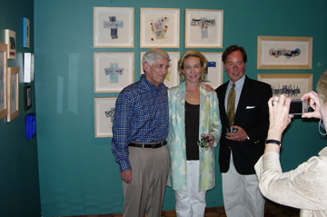

|
> Artists > Cary Brown > Info
Cary Brown

Images | Images 2 | Images 3 | Images 4 | Images 5 | Images 6 | Images 7 | Info

Bazzle.Brown-Epstein.Jones, Alumni in the Arts
21 April - 3 June, UVa Art Museum 2007
Artist portfolio
Education
B.A. Degree, University of Virginia, Charlottesville, VA 1980-84
(studied under Christopher Brown, Richard Crozier, and Philip Geiger)
Rhode Island School of Design, Providence, RI 1982
A.A.S. Degree, Parson’s School of Design, New York, NY 1985-87
Art Students League, New York, NY 1988
The New York Academy of Art, New York, NY 1989-92
Museum exhibition
| 2007 |
Alumni in the Arts, University of Virginia Art Museum, Charlottesville, VA |
One-person exhibitions
| 2008 |
The Birds Sang Light and Other Messages of Wonder (a traveling show): Martha Jefferson Hospital
in Charlottesville, the National Institutes of Health in Bethesda, and the Washington Cancer Institute in D.C. (Lillian Fitzgerald, curator). |
| 1996 |
Natural Elements, The Thomas Jefferson Center for the Protection of Free Expression, Charlottesville, VA |
Selected group exhibitions
| 2014 |
Visions of Spring, Les Yeux du Monde Gallery, Charlottesville, VA |
| 2006 |
Celebrating Women in the Arts & Women’s History Month, FOCUS Women’s Resource Center in cooperation with Les Yeux du Monde Gallery, Charlottesville, VA |
| 2004 |
Small Treasures, Les Yeux du Monde Gallery, Charlottesville, VA |
| 2003 |
Artists Among Us, Second Street Gallery, Charlottesville, VA |
| |
The H’Art Show, Les Yeux du Monde Gallery, Charlottesville, VA |
| 2001 |
IX Artists, Les Yeux du Monde Gallery, Charlottesville, VA |
| 2000 |
The Winter Group Show, New Dominion Bookshop, Charlottesville, VA |
| |
Hindsite Fore-site: Painting in the year 2000, Les Yeux du Monde Gallery, Charlottesville, VA |
| 1999 |
Moving into the Millennuim: Darkness, Les Yeux du Monde Gallery, Charlottesville, VA |
| |
Small Works II, Mooney Gallery, Charlottesville, VA |
| |
Fall Group Show, Mooney Gallery, Charlottesville, VA |
| 1998 |
Moving into the Millennium: Lightness, Les Yeux du Monde Gallery, Charlottesville, VA |
| |
The Winter Group Show, New Dominion Bookshop, Charlottesville, VA |
| 1997 |
Summer Show, Les Yeux du Monde Gallery, Charlottesville, VA |
| 1996 |
Summer Solstice Show, Les Yeux du Monde Gallery, Charlottesville, VA |
| |
Legal Spaces, Places, and Faces, C.B. Nunley Law Office, Charlottesville, VA |
| |
Holiday Art Show, Gallery Neo, Charlottesville, VA |
Other
| 2005 |
Cover Art: “Julep”, watercolor for The Mint Julep book by Richard B. Harwell, University of Virginia Press, Charlottlesville, VA |
Reviews
Selected collections
Laura Lee and Steve Wilson
Betsy Sussler
Martha Jefferson Hospital
Mr. & Mrs. J. Stewart Byran, III, Richmond, VA
Charlotte Minor, Richmond, VA
Dr. & Mrs. Donald Innes, Charlottesville, VA
Brown-Forman Corporation
Mr. and Mrs. James C. Collins
Artist website
Images | Images 2 | Images 3 | Images 4 | Images 5 | Images 6 | Images 7 | Info
|